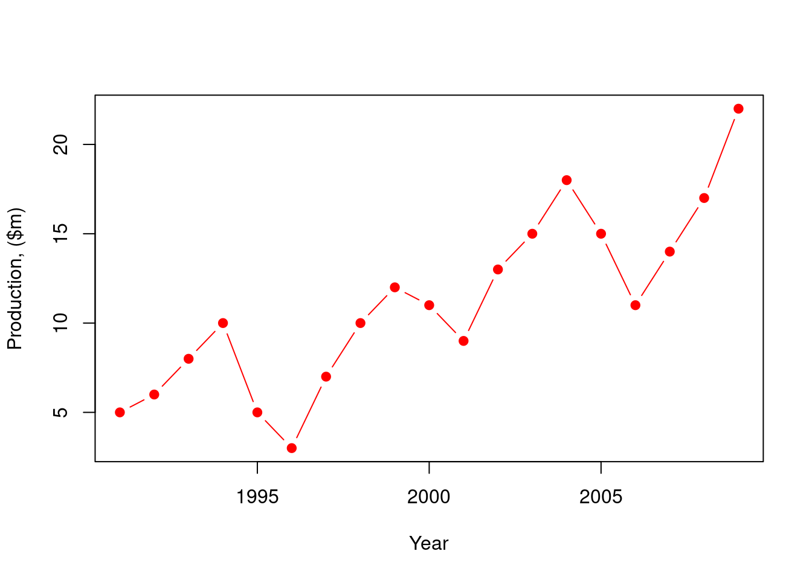
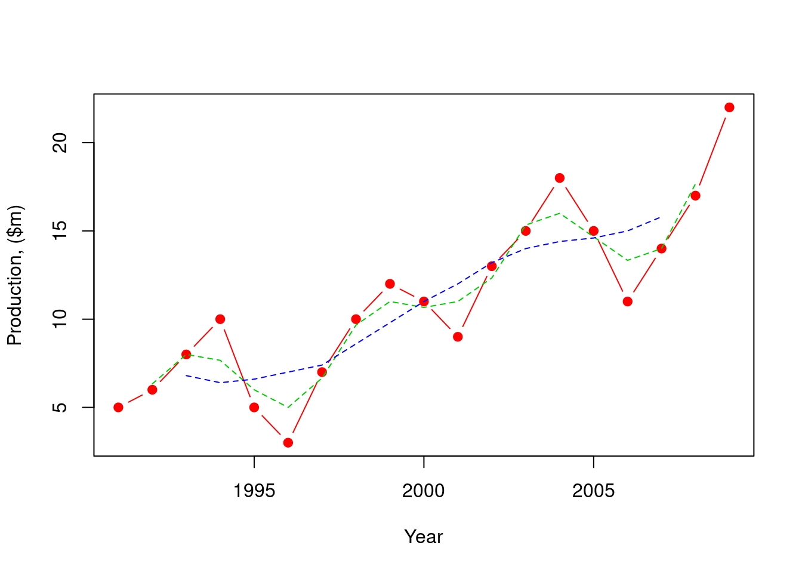
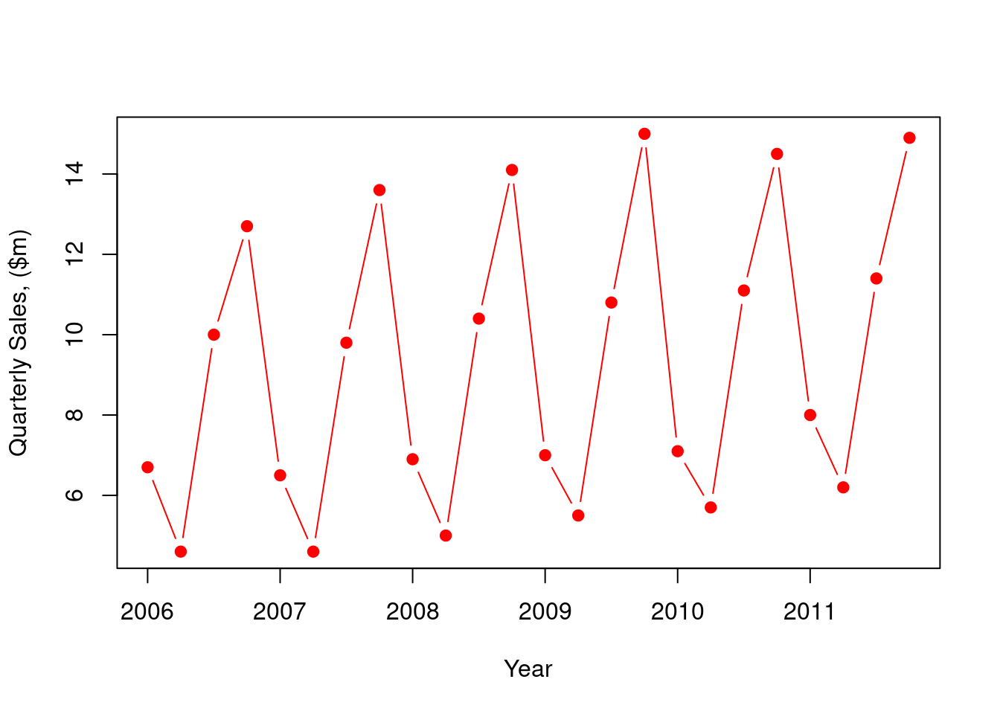
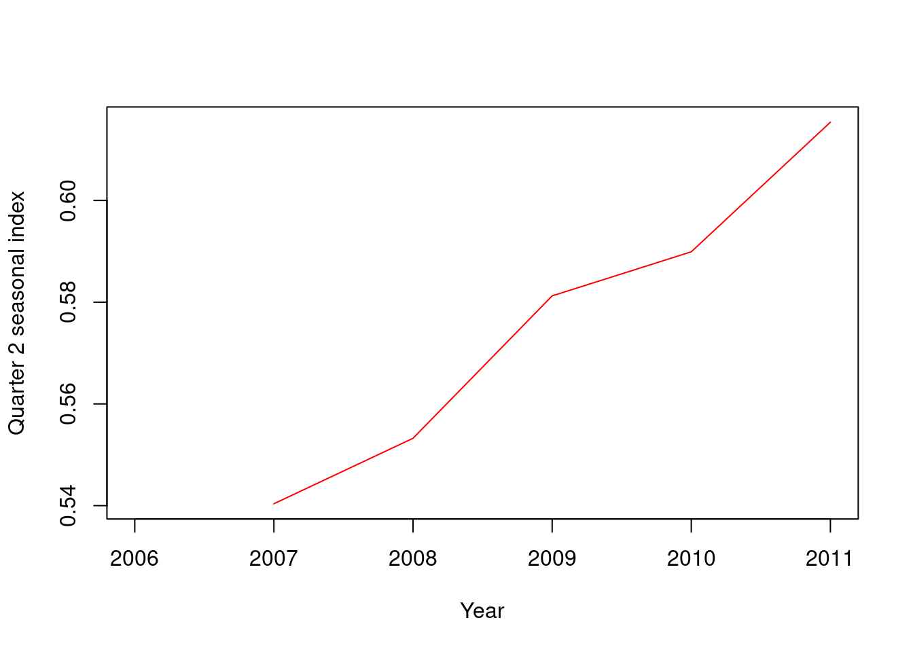
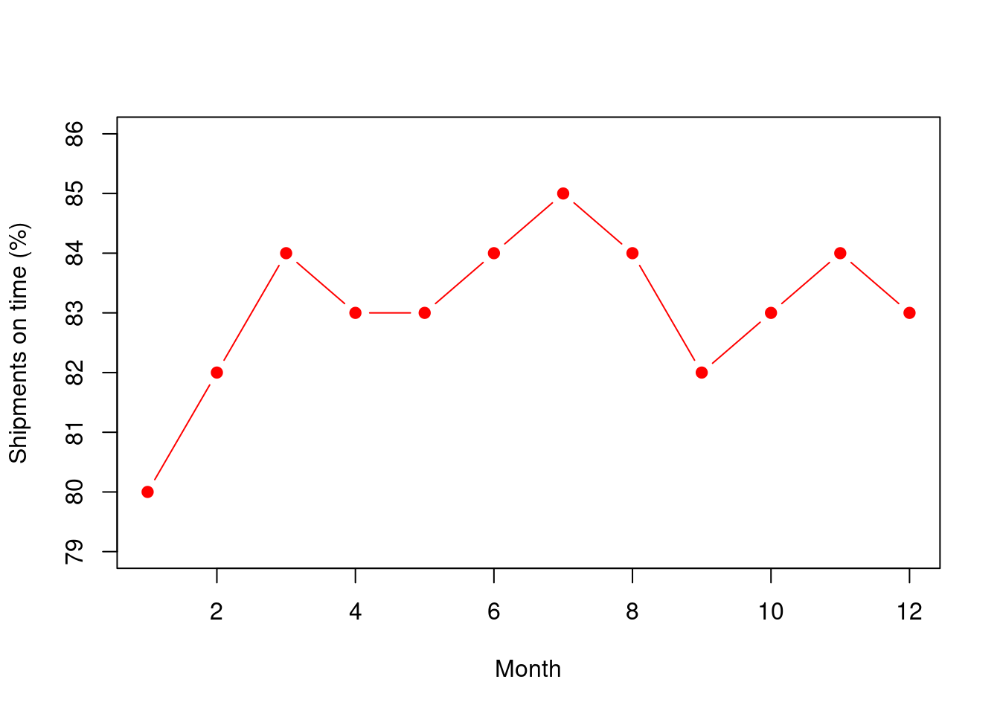
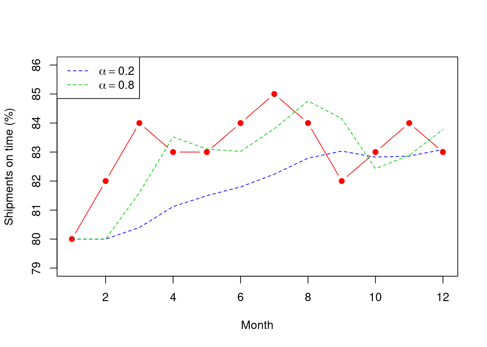
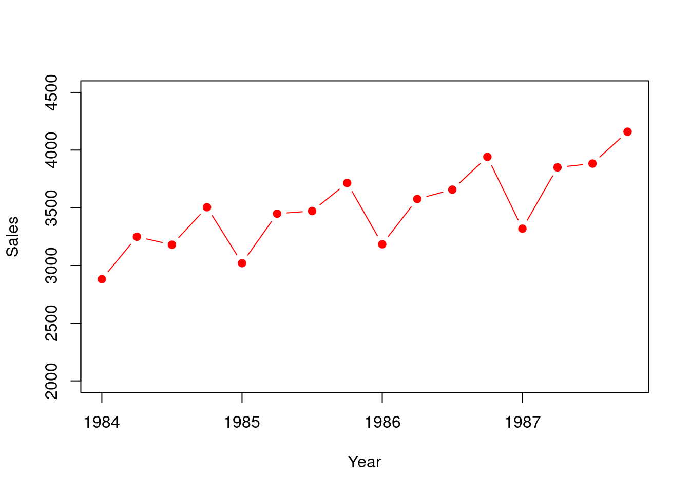

Chapter 4 Time series
4.1 Motivation
So far, we have looked at predicting a response variable based on one or more predictor variables. Another form of prediction, called Time Series, is where we have only the chronological values of a response variable e.g. the FTSE index, or annual sales levels. Time Series can occur in continuous time (e.g. temperature) or discrete time ( e.g. monthly rainfall, FTSE 100 closing level). We concentrate here only on discrete time models.
If we are to fit a model to the data, we are assuming:
Any patterns identified will continue into the future
Measurements in the historical data are correlated
The model we build will typically lose accuracy the longer into the future we try to predict. In other words, the shorter the time scale of the prediction, the more accurate our forecast should be.
4.1.1 Components of a time series
4.1.2 Types of time series models
Assume that our time series consists of measurements made at discrete time points, so that \(X_{t}\) denotes the measurement of quantity \(X\) at time \(t\) \(\left\{X_{t} \right\}\) denotes the series of measurements on \(X\). Let \({\hat{X}}_{t}\) denote our forecast value for \(X\) at time \(t\).
There are several different ways of combining the components of a time series listed in Section 4.1.1. For instance, we might consider:
Model without trend and without seasonality \[X_{t} = M_{t} + I_{t}\] or \[\ X_{t} = \beta_{0} + I_{t}\]
where \(\beta_{0}\) is a constant
or additive seasonal model with trend \[X_{t} = M_{t} + \ T_{t} + \ S_{t} + \ I_{t}\]
or multiplicative seasonal model with trend \[X_{t} = \left( M_{t} + \ T_{t} \right) S_{t} + \ I_{t}\]
or multiplicative seasonal model without trend \[X_{t} = M_{t} S_{t} + \ I_{t}\]
where
\(M_{t}\) represents the general level of the series
\(T_{t}\) represents the trend at time \(t\)
\(S_{t}\) represents the seasonal component at time \(t\)
\(I_{t}\) represents the irregular component at time \(t\)
4.2 Using moving averages to estimate trend
A moving average is used to smooth fluctuations in a time series in order to recognise its trend. To be effective, the data should follow a roughly linear trend, and have a pattern of fluctuations, repeating every few time periods (e.g. every 12 months, or every 5 years).
Example 4.1 (Production (moving average)) Suppose we have 19 years of data \(\left\{Y_{i}, \ i = 1, \ldots, 19 \right\}\) showing production levels in millions of dollars for 1991 – 2009:
A plot of the data (Figure 4.1) suggests a rising trend and a cycle of length perhaps 5 years:
production<-c(5, 6, 8, 10, 5, 3, 7, 10, 12, 11, 9, 13, 15, 18, 15, 11, 14,
17, 22)
# coerce vector to ts object
production<-ts(production, start = 1991, frequency = 1)
plot(production, ylab = "Production, ($m)", xlab = "Year", col = "red",
type = "b", pch = 19)
Figure 4.1: A time series plot for the production data.
We might investigate 3-year and 5-year moving averages defined as \[ \text{3-year }\ \text{Moving Annual Total} = (Y_{i - 1} + Y_{i} + Y_{i + 1}) \] \[ \text{3-year }\ \text{Moving Average} = (Y_{i - 1} + Y_{i} + Y_{i + 1})/3 \] \[ \text{5-year }\ \text{Moving Annual Total} = (Y_{i - 2} + Y_{i - 1} + Y_{i} + Y_{i + 1} + Y_{i + 2}) \] \[ \text{5-year }\ \text{Moving Average} = (Y_{i - 2} + Y_{i - 1} + Y_{i} + Y_{i + 1} + Y_{i + 2})/5 \]
There seems to be a 5-year cycle in the data, but we use the 3-year moving average for comparison.
To calculate a 3-year moving average, we calculate the 3-year moving total and place it at the mid-point of the 3 years used in its calculation. The 3-year MA at this point is simply the 3-year moving total divided by 3 i.e. \[{MA3}_{i} = (Y_{i - 1} + Y_{i} + Y_{i + 1})/3\]
Note that this means that \(MA3_{1}\) and \(MA3_{19}\) cannot be calculated.
Similarly, \[{MA5}_{i} = (Y_{i - 2} + Y_{i - 1} + Y_{i} + Y_{i + 1} + Y_{i + 2})/5\]
and we cannot calculate \(MA5_{1},MA5_{2},MA5_{18},MA5_{19}\)
A plot of the original data (Figure 4.2) shows that both the 3-year and 5-year moving averages smooth out the data – the 5-year MA more so. The 5-year MA removes virtually any trace of the cycle, and is a good estimate of the trend in the data.

Figure 4.2: A time series plot with 5-year and 3-years moving averages for the production data.
4.2.1 Weighted Moving Averages
In this example, we have calculated moving averages which place equal weight (i.e. 1/3 , 1/3, 1/3 in the case of a 3-year moving average; 1/5, 1/5 , 1/5, 1/5, 1/5 for a 5-year moving average) . In many instances, we may wish to give greater weight to more recent observations.
For instance, if we were using the data above, we may wish to calculate 3-year moving averages, with twice as much weight afforded to the latest year’s data. Then
4.3 Estimating seasonal variation with seasonal indices
Many time series will demonstrate seasonality, for example:
Sales of ice cream in the UK rise in the summer and fall in the winter
UK department store sales levels may peak in December (Christmas), maintain a healthy level in January (when sales are held), and reduce significantly in February
UK factory production may be lowest in August and December as more people take annual leave in those months.
In order to determine the size of the typical seasonal fluctuation in a time series, we can calculate .
For instance, the following table shows monthly indices for sales in a department store:
This table can be interpreted as follows:
Sales in December are typically 26.8% higher than in a typical month
Sales in July are typically 14% lower than in a typical month
Seasonal indices can be calculated using a variety of methods, the most widely-used of which is the . This method:
Calculates a moving average at as many observation points as possible
Estimates a seasonal index at each of these points, by dividing the actual observation by the moving average
Calculates mean seasonal indices
Adjusts the seasonal indices appropriately.
Example 4.2 (Toy sales) Suppose we observe the quarterly sales (in $m) of a toy manufacturer, over the period 2006 to 2011:
A plot of the data (Figure 4.3) suggests a slight increasing trend, and displays seasonality.

Figure 4.3: The time series plot for the toy data exhibiting a seasonal cycle.
The steps in the calculation are as follows (the results are shown in Table ):
Calculate 4-Quarter Moving Totals (since there are 4 quarters in the year), and centre these at the mid-point. For instance, the 4-Quarter Moving Total covering the first 4 observations are centred between Quarters 2 and 3 of 2006.
Calculate 4-Quarter Moving Averages at the same points by dividing the 4-Quarter Moving Total by 4.
Calculate a Centred Moving Average at the points 2006 Q3 to 2009 Q2 by averaging the two 4-Quarter Moving Averages at either side.
Calculate a Seasonal value at these points by dividing the actual observation by the Centred Moving Average.
The successive estimates of the seasonal indices for each quarter are
The mean values of the seasonal indices need to add up to 4, so we adjust each mean index by multiplying by 4/4.009. Hence our final estimates of the seasonal indices are:
Quarter 1 0.765
Quarter 2 0.575
Quarter 3 1.141
Quarter 4 1.519
Note that this method of estimating seasonal effects calculates the mean seasonal index - hence it does not take account of changes over time in the seasonal indices. For instance, if we plot the five Quarter 2 seasonal estimates (Figure 4.4), we see that this seasonal element is increasing over the 5 years of observations.
## Registered S3 method overwritten by 'quantmod':
## method from
## as.zoo.data.frame zoo## This is forecast 8.12
## Want to meet other forecasters? Join the International Institute of Forecasters:
## http://forecasters.org/##
## Attaching package: 'forecast'## The following object is masked from 'package:astsa':
##
## gas
Figure 4.4: Plot of the Quarter 2 seasonal index estimates for the toy data.
More complex time series methods, including exponential smoothing, are able to track changes in seasonal patterns, and amend estimates accordingly.
4.4 Exponential smoothing
Exponential smoothing is a method of estimating the various elements of a time series (general level, trend and seasonality) and updating those estimates with each new observation. At any point, it is able to take into account every single observation to date in estimating the elements of a time series, but placing greater weight on the latest observation.
There are 3 types of exponential smoothing:
The name is taken from the fact that at any time point \(i\), the updated estimate of an element of the time series is calculated as: \[\mbox{New estimate} = \mbox{factor}\times \mbox{new observation of element} + \mbox{(1 - factor)} \times \mbox{previous estimate}\] where the factor is some value between 0 and 1. As a result, the weight placed on previous observations decreases exponentially as we go back in time.
4.4.1 Simple exponential smoothing
Simple exponential smoothing is a technique method for forecasting time series. It is applicable where the time series has no discernible trend, either increasing or decreasing, and no seasonality.
With no trend or seasonal element, we can think of a model of the form: \[\begin{equation} X_{t} = \beta_{0} + I_{t} \end{equation}\] where \(\beta_{0}\) represents the general level of the time series, and \(I_{t}\) the random error.
Example 4.3 (Shipments) The following time series give information on the monthly percentage of all shipments received on time by a company in the past year:
The plot in Figure 4.5 shows that, although the percentage for months 1 and 2 are lower than those for most of the other months, there is no discernible trend or seasonality (we only have one year’s figures!) so exponential smoothing is appropriate.

Figure 4.5: Time series of the monthly percentage of shipments on time ( dataset).
We wish to estimate the level of the series at time \(t\). Since the \(\left\{ X_{t} \right\}\) are all equal to the general level plus a variable element, it makes sense to use all observations to date to determine our estimate of the level. However, we want to give greater weight to the latest observation, as this is our latest indicator of the level of the series. Exponential smoothing allows us to do this – if \(M_{t}\) denotes the estimate of the level at time \(t\), then we use: \[\begin{equation} M_{t} = \ \alpha X_{t} + \ \alpha\left( 1 - \alpha \right)X_{t - 1} + \ \alpha\ {(1 - \alpha)}^{2}X_{t - 2} + \ldots \label{eq:expSmooth2} \end{equation}\] where \(0\ < \ \alpha\ < 1\) is called the smoothing constant.
Equation () can be re-written: \[\begin{equation} M_{t} = \ \alpha X_{t} + \ \left( 1 - \alpha \right)\left\{ \alpha X_{t - 1} + \alpha(1 - \alpha)X_{t - 2} + \ldots \right\} \label{eq:expSmooth3} \end{equation}\] \[\begin{equation} M_{t} = \ \alpha X_{t} + \ \left( 1 - \alpha \right)M_{t - 1} \label{eq:expSmooth4} \end{equation}\] So, our latest estimate for the level (\(M_{t}\)) is a weighted average of our latest observation (\(X_{t}\)) and our previous estimate for the level (\(M_{t - 1}\)).
Note that a value of \(\alpha\) close to 1 gives greater weight to most recent observations; a value of \(\alpha\) close to 0 gives less weight to recent observations
Given a starting value for \(M_{1}\), we can use Equation () iteratively to obtain \(M_{2}, M_{3},\) etc.
Let \({\hat{X}}_{t + n}\) denote the forecast at time \(t + n\), made using the observations available to us at time \(t\), namely \(\left\{ X_{1},X_{2},X_{3},\ \ldots,X_{t} \right\}\). \({\hat{X}}_{t + n}\) is called the from \(X_{t}\).
For exponential smoothing, our best estimate of the level of the series in the future is the latest estimate of the level made at time \(t\), which is \(M_{t}\) i.e. \[\begin{equation} {\hat{X}}_{t + n} = \ M_{t},\ \ \ n = 1,2,\ldots \label{eq:expSmooth5} \end{equation}\]
Note therefore that: \[{\hat{X}}_{t} = \ M_{t - 1} \quad \mbox{and} \quad {\hat{X}}_{t + 1} = \ M_{t}\]
Then substituting in Equation () gives us: \[\begin{align} {\hat{X}}_{t + 1} & = {\alpha X_{t} + \left( 1 - \alpha \right)\hat{X}}_{t} \\ & = {\hat{X}}_{t} + \ \alpha(X_{t} - {\hat{X}}_{t}) \label{eq:expSmooth6} \end{align}\]
Since \((X_{t} - {\hat{X}}_{t})\) is just the forecasting error at time \(t\), Equation () shows that the new forecast \({\hat{X}}_{t + 1}\) is equal to the previous forecast \({\hat{X}}_{t}\) plus an adjustment which is \(\alpha\) times the most recent forecast error.
The objective of smoothing is to smooth out the effect of the random fluctuations caused by the irregular component (\(I_{t}\)) in the time series.
If the irregular component in the series is large, then a small value of \(\alpha\) is preferred, because a large proportion of the forecast error will be due to this large irregular component.
If the irregular component in the series is small, then a large value of \(\alpha\) is preferred, so that we can quickly adjust the forecast when a forecasting error occurs.
Determining \(\alpha\)
It makes sense to choose that value of \(\alpha\) which minimises the forecasting errors produced by the exponential smoothing. The measure we use is the mean square deviation (MSD), the average of the sum of squared errors. If our observations are \(X_{1},X_{2},\ \ldots,\ X_{T}\), then the MSD is defined by: \[MSD = \ \frac{1}{T - 1}\sum_{t = 2}^{T}{(X_{t} - {\hat{X}}_{t})}^{2}\]
A small MSD indicates a good fit to our data.
There are two main methods available to us to determine the value of \(\alpha\) which minimises the MSD:
- to calculate the MSD for, say, all values of \(\alpha\) from 0.01 to 0.99 in steps of 0.01, and choose the \(\alpha\) which gives the lowest MSD
- to use an optimisation routine, like the
optimfunction in .
From the data previously given and using \(\alpha = 0.2\) and \(\alpha = 0.8\):

Figure 4.6: Time series plot of the data with \(\alpha=0.2\) and \(\alpha=0.8\).
We will investigate manual and optimal values of \(\alpha\) in in the practical sessions.
4.4.2 Holt’s linear trend method (double exponential smoothing)
Suppose our time series displays a linear trend. Then we can model the series as: \[\begin{equation} X_{t} = \beta_{0} + {\beta_{1}t + \ I}_{t} \label{eq:ts_Holt1} \end{equation}\]
where \(\beta_{0}\) represents the intercept and \(\beta_{1}\) represents the slope.
Consider the time series at time \(t + n\). It follows from Equation () that: \[\begin{eqnarray}\nonumber X_{t + n} & =& \beta_{0} + {\beta_{1}(t + n) + \ I}_{t + n}\\ & = & \left( \beta_{0} + \beta_{1}t \right) + \beta_{1}n + I_{t + n} \label{eq:ts_Holt2} \end{eqnarray}\]
Equation () shows that we can express a time series at time \(t + n\) as the level at time \(t\) plus \(n\) times the slope of the linear trend, plus the irregular variation.
Let \(M_{t}\) and \(T_{t}\) denote the smoothed estimates of the level and slope at time period \(t\). Then, \(M_{t}\) is an estimate of \(\beta_{0} + \beta_{1}t\), and \(T_{t}\) an estimate of the slope of the trend line at time \(t\) (in other words, an estimate of \(\beta_{1}\)).
So, if we wish to obtain the n-step ahead forecast from time \(t\), i.e. \({\hat{X}}_{t + n}\), based on the observations \(X_{1},X_{2},\ldots,X_{t}\).
In equation ():
\(X_{t + n}\) is unknown, and we look to replace it with our forecast \({\hat{X}}_{t + n}.\)
\(M_{t}\) is an estimate of \(\beta_{0} + \beta_{1}t\)
\(T_{t}\) is an estimate of \(\beta_{1}\).
Our forecast of the irregular component \(I_{t + n}\) is its expectation i.e. zero.
This means that \[\begin{equation} {\hat{X}}_{t + n} = M_{t} + T_{t}\times n,\ \ \ n = 1,2,3,\ldots \label{eq:ts_Holt3} \end{equation}\] We use exponential smoothing to estimate \(M_{t}\) and \(T_{t}\) – hence the phrase .
Substituting \((t - 1)\) for \(t\) and setting \(n = 1\) in Equation () above, we obtain \[{\hat{X}}_{t} = M_{t - 1} + T_{t - 1}\]
and therefore, using Equation (), with a smoothing constant \(0 < \alpha < 1\), \[\begin{equation} M_{t} = \alpha X_{t} + (1 - \alpha)(M_{t - 1} + T_{t - 1}) \label{eq:ts_Holt5} \end{equation}\]
Now note that the current estimate of the slope is \(M_{t} - M_{t - 1}\). Hence smoothed values for \(T_{t}\) are given by: \[\begin{equation} T_{t} = \gamma\left( M_{t} - M_{t - 1} \right) + (1 - \gamma)T_{t - 1} \label{eq:ts_Holt6} \end{equation}\] where \(0 < \gamma < 1\) is the smoothing constant for the trend.
In order to solve the recursive Equations () and (), we need initial values. An intuitive choice is to set \(T_{2} = X_{2} - X_{1}\), and \(M_{2} = X_{2}.\)
4.4.3 Holt-Winters’ multiplicative model (triple exponential smoothing)
We now extend the Holt-Winters’ trend method to include a seasonal term. Assuming the trend is linear, we have \[X_{t} = C_{t}\left( \beta_{0} + \beta_{1}\times t \right) + I_{t}\]
where \(C_{t}\) is a seasonal component with \(s\) periods (e.g. \(s = 4\) for quarterly data, \(s = 12\) for monthly data).
Thus, for forecasting purposes, we multiply the updated trend by the updated seasonal factor; to deseasonalise the data, we divide the data by the appropriate seasonal factor.
Utilising the general exponential smoothing Equation (), the de-seasonalised data for time period \(t\) can be obtained by dividing by the latest estimate of the seasonal effect i.e. the seasonal effect \(s\) periods ago.
Thus: \[\begin{equation} M_{t} = \alpha\frac{X_{t}}{S_{t - s}} + (1 - \alpha)(M_{t - 1} + T_{t - 1}) \label{eq:ts_HoltWint1} \end{equation}\]
for a smoothing constant \(0 < \alpha < 1\).
For the linear trend \(T_{t}\), we have \[\begin{equation} T_{t} = \gamma\left( M_{t} - M_{t - 1} \right) + (1 - \gamma)T_{t - 1} \label{eq:ts_HoltWint2} \end{equation}\]
from before, where \(0 < \gamma < 1\) is the smoothing constant for the trend.
For the seasonal effect \(S_{t}\), note that the actual seasonal variation in the data is equal to the actual data point divided by the new estimate of the level. Our old estimate of the seasonal component at time \(t\) is the old estimate made at time \(t - s\). So, again using our general Equation (), we have: \[\begin{equation} S_{t} = \delta \frac{X_{t}}{M_{t}} + (1-\delta)S_{t - s} \label{eq:ts_HoltWint3} \end{equation}\]
where \(0 < \delta < 1\) is the smoothing constant for the seasonal component.
Starting values
In order to solve the recursive equations (), (), () we need to apply starting values. There is a whole field of research dedicated to identifying the optimal starting values for the Holt-Winters method, and starting values can have an effect on forecasts produced by the methods. Here we provide some fairly simple starting values, which have the advantage of being fairly intuitive:
Example 4.4 (Generator sales) Below, we list quarterly product sales over the period 1984–1987 for a commercial generator manufacturer:

Figure 4.7: Quarterly product sales for 1984–1987 from the generator example.
A plot of the data (Figure 4.7) suggests both a trend and seasonal component to the data. It is not obvious from the plot whether the seasonal element is multiplicative or additive – for illustration purposes, we will fit the Holt Winters multiplicative model. Note that the period (\(s\)) in this example is 4.
Starting values are calculated as follows:
General Level:
\[M_{4} = \frac{2881 + 3249 + 3180 + 3505}{4} = 3203.75\]
Trend:
\[T_{4} = \frac{\left(3020 + 3449 + 3472 + 3715 \right) - \left( 2881 + 3249 + 3180 + 3505 \right)}{4 \times 4} = 52.56\]
Seasonal component:
\[S_{1} = \frac{2881}{3203.75} = 0.899259\] \[S_{2} = \frac{3249}{3203.75} = 1.014124\] \[S_{3} = \frac{3180}{3203.75} = 0.992587\] \[S_{4} = \frac{3505}{3203.75} = 1.09430\]
Using parameter values of \(\alpha = 0.2\), \(\gamma = 0.2\) and \(\delta = 0.1\), we can calculate relevant quantities for the forecasting as follows.